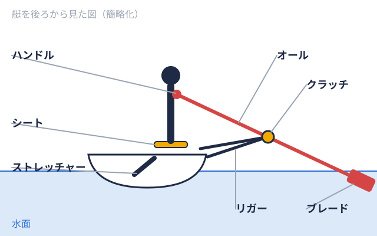
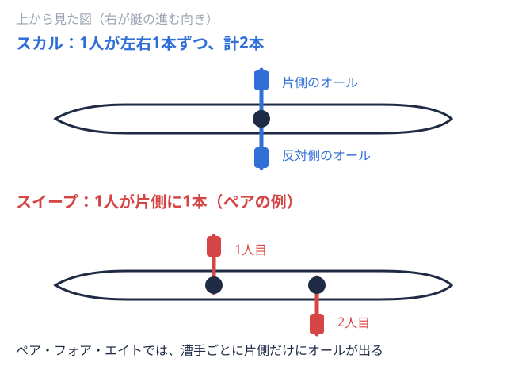

練習 2026-11-25
ボート部の漕ぎ方の基本｜ローイングのキャッチ・ドライブ・フィニッシュ・リカバリー
ボート部の漕ぎ方は「4つの局面」で考えると整理しやすくなります
大学ボート部（ローイング・漕艇）に入ると、先輩やコーチから「キャッチオールの先を水に入れ、水をつかむ瞬間。1回の漕ぎの始まりにあたる。 が遅い」「手が先に動いている」「リカバリーオールを水から出したあと、次の1本に向けて体とシートを前へ戻す局面。を急がない」といった言葉をかけられます。ところが、新入部員のうちは、それぞれの言葉が漕ぐ動作のどの部分を指しているのかが分からないまま、とにかく真似をしてしまうことが少なくありません。この記事では、ボートレース（競艇）とは別の、大学ボート（ローイング）の漕ぎ方の基本を整理します。
が遅い」「手が先に動いている」「リカバリーオールを水から出したあと、次の1本に向けて体とシートを前へ戻す局面。を急がない」といった言葉をかけられます。ところが、新入部員のうちは、それぞれの言葉が漕ぐ動作のどの部分を指しているのかが分からないまま、とにかく真似をしてしまうことが少なくありません。この記事では、ボートレース（競艇）とは別の、大学ボート（ローイング）の漕ぎ方の基本を整理します。
ローイングの1回の漕ぎ動作は、一般に「ストローク艇の最後尾寄りに座り、全員の漕ぐリズムを決める漕手。漕ぐ1回分の動作も指す。 」と呼ばれ、次の4つの局面に分けて説明されることが多いです。
」と呼ばれ、次の4つの局面に分けて説明されることが多いです。
- キャッチ: オールのブレードオールの先にある、水に入って水をとらえる、平たい形をした部分。

（水をつかむ先端）を水に入れる局面 - ドライブ水に入れたオールを脚などの力で引き、艇を前に進める局面。: 水中でブレードをとらえ、艇を進める力を出す局面
- フィニッシュ漕ぎの終わりの局面。水を押し終えてオールが水面から出る直後。ゴールの意味でも使う。: 漕ぎ終わりにブレードを水から抜く局面
- リカバリー: ブレードを水から出したまま、次のキャッチへ戻る局面
ただし、この4分割は説明のための整理であり、実際の動作は切れ目なく連続しています。また、指導者や国・学校によって、フィニッシュをドライブの終わりとして扱うなど、区切り方や言葉の使い方には差があります。所属する部で使われている言葉を優先し、この記事は「共通の見取り図」として読んでください。
なお、陸上のエルゴメーター陸の上で漕ぐ動作を再現するトレーニング機器。タイムの計測にも使う。（ローイングマシン）での漕ぎ方はローイングのエルゴの使い方の記事で扱っています。本記事は水上で艇に乗って漕ぐ場合の動作を中心に説明します。
想定する読者と、この記事でわかること
主な想定読者は、次のような方々です。
- 入部したばかりで、水上練習に出る前にフォームの全体像を知っておきたい新入部員
- 先輩の指摘の意味を、自分の言葉で理解したい1〜2年生
- これから大学ボートを始めたいと考えていて、どんな動きをするのか知りたい高校生・保護者
この記事で整理するのは、次の4点です。
- 4つの局面のそれぞれで、何をする時間なのか
- ドライブでの「脚→体→腕」の順序と、リカバリーでの「腕→体→脚（シート漕ぐ人が座る席。下に車輪があり、脚の動きに合わせて前後に動く。）」の戻し方
- 公開されている情報から見えるつまずきやすい点
- 練習での取り組み方と、腰・手などの怪我予防への接続
特定の漕ぎ方が唯一の正解だと断定するものではありません。艇種、体格、コーチの方針によって細部は変わる場合があります。
キャッチ｜ブレードを水に入れる局面
キャッチは、リカバリーで前に戻った体勢から、ブレードを水に入れる局面です。USRowingの解説では、漕ぎ手オールを持って艇を前に進める選手。舵を取るだけの人は含めない。は前方でシート上にコンパクトに構え、ひざが曲がって腕が伸びた状態で、ブレードが水に垂直に落ちると説明されています。
Concept2（エルゴメーターの製造元）の技術解説でも、キャッチでは腕を伸ばし、頭と肩の位置を整え、股関節から上体を前に倒して肩を腰より前に出す、と述べられています。すねはできるだけ垂直に近い位置が目安とされています。これは陸上のエルゴ向けの説明ですが、水上でも同じ考え方の人が多い、とされています。
日本語の個人サイトの解説では、ひざをできるだけ曲げ、手を伸ばして、なるべく遠くの水をつかむことが初心者向けの基本として挙げられています。
ここで押さえておきたいのは、次の点です。
- キャッチは「引く」局面ではなく、「水に入れて、これから体を使い始める準備を整える」局面として説明されることが多い
- 腕だけを前に突き出して上体が前かがみになると、後の動作に影響が出る場合があると指摘されている
- ブレードを入れる位置が毎回そろっていると、次のドライブで力を使いやすい
チームでは、全員のキャッチのタイミングがそろうことが重要になります。特にエイト漕ぐ人8人と舵を取る人1人が乗る最大級の艇。1人1本のオールを持つ。のような種目では、ストロークの席の動きに合わせてほかの席が漕ぐ、と説明されています。席順の考え方はストロークの役割の記事にまとめています。
ドライブ｜脚→体→腕の順で力を伝える局面
ドライブは、水中でブレードをとらえた状態で艇を進める、いわゆる「仕事」をする局面です。USRowingは、最初は体の位置を保ったまま脚が働き、その後に上体が開いて、腕がブレードを水中で引く、と説明しています。Concept2も「まず脚で押し、次に背中を垂直に通過するよう振り、最後に腕を引く」という順序を示しています。
つまり、ドライブの順序は一般に次のようになります。
- 脚で足板（ストレッチャー漕ぐ人が足をかける板。靴が固定されていて、脚で押す力を艇に伝える。）を押す
- 上体を後ろへ開く（体幹を使う）
- 最後に腕でハンドルを体に引きつける
Wikipediaの英語版の「Rowing stroke」では、脚がストロークの力の約60%を生み出すとされています（あくまで記述の一つであり、個人差や艇種で変わる場合があります）。「腕で漕ぐ」というイメージを持ちやすい初心者にとっては、「腕は最後に使う」という考え方が最初の壁になりやすい、と説明されることが多いです。
日本語の解説では、ドライブで脚で足板を押し、腕は引くのではなく体の重心の移動に合わせて使う、とされています。また、手が先に上がるとオールが浅くなって水をとらえにくくなる、とも説明されています。
ドライブの意識のポイントは次のとおりです。
- 脚が伸びきる前に腕を曲げ始めないよう意識する
- 上体の開く動作を、脚の動きに遅れず自然につなげる
- 肩に力を入れすぎず、ハンドルは軽く握る（Concept2は肩を低くリラックスさせることを勧めています）
フィニッシュ｜ブレードを抜き、フェザリングに移る局面
フィニッシュは、ドライブの終わりにブレードを水から抜く局面です。USRowingでは、ハンドルを下に動かしてブレードを水から持ち上げ、ハンドルを回してブレードを垂直から水平に回転させる（フェザリング）と説明しています。
Concept2の説明では、フィニッシュ時の上体はわずかに後ろへ傾き、体幹で支えます。脚は伸び、ハンドルは肋骨の下あたりに軽く保持します。手首とグリップの力みは抜く、と述べられています。USRowingも、体がわずかに後傾した姿勢を保つには腹筋の力が必要だと説明しています。
ここでのポイントは次のとおりです。
- ブレードは水中から「引き上げる」のではなく、ハンドルを下げて抜く
- フェザリング（ブレードを水平にする動作）は、水の抵抗や空気抵抗を減らす役割がある、と説明される
- 後傾は「後ろに倒れる」のではなく、体幹で支えられる範囲にとどめる
後傾が大きすぎる、または体幹の支えが弱い場合、腰への負担が増える場合があります。腰痛との関係は腰痛予防・ストレッチの記事で詳しく整理しています。
リカバリー｜手→体→シートの順で次のキャッチへ戻る局面
リカバリーは、ブレードを水から出した状態で、次のキャッチの姿勢へ戻る局面です。USRowingの説明では、ブレードは水に入らず、手がまず体から遠ざかり、ひざを越えます。その後に体が手を追い、シートが前へ滑ります。ひざが曲がって次のキャッチの準備が整うまで戻る、とされています。
Concept2の説明でも、腕を伸ばしきり、股関節から上体をフライホイール側へ倒し、手がひざを越えたらひざを曲げてシートを前に滑らせる、という順序です。ドライブの逆順、と覚えるとわかりやすいでしょう。
| 局面 | 動かす順序 | 主な意識 |
|---|---|---|
| ドライブ | 脚 → 体 → 腕 | 力を出す。腕は最後 |
| リカバリー | 腕（手）→ 体 → 脚（シート） | 力を抜き、静かに戻す |
日本語の解説では、リカバリーを「フェザリング」と「フォワード（前へ出す）」の二段階に分けて説明するものもあります。ブレードの角度を整え、手を前に出しながら体を前に戻す、という流れです。
リカバリーでは、艇の動きを乱さないことも重要です。シートを急に動かすと艇が揺れる場合があります。ドライブとリカバリーの時間配分については、公開されている公式な解説では具体的な比率を確認できなかったため、この記事では数値を示しません。所属部のコーチが示すタイミングを優先してください。
新入部員がつまずきやすいとされる点
次の項目は、公開されている解説やコーチングの一般的な指摘をもとに整理したものです。必ず起きる、という意味ではなく、起こる場合があるというチェックリストとして使ってください。
| つまずきの例 | 起こると考えられること | 見直しの視点 |
|---|---|---|
| 手が先に上がる | ブレードが浅くなり、水をとらえにくくなる場合がある | ドライブ中の手の高さ、体の動きとの連動 |
| 腕を早く曲げる | 脚の力が十分に伝わらない場合がある | 脚→体→腕の順序を確認 |
| 上体の開きを省く | 力が逃げる場合がある（Wikipediaは「体の動きが省かれると力が無駄になる」と説明） | 体幹の使い方 |
| 肩や手首に力が入る | 疲れやすくなる、動きが硬くなる場合がある | Concept2が勧める「肩は低くリラックス」 |
| キャッチで前かがみになる | 後の動作に影響する場合がある | 股関節から前傾しているか |
| リカバリーで急ぐ | 艇が揺れる場合がある | 手→体→シートの順序と静かな動き |
自分で原因を決めつけず、コーチや先輩に動画を見てもらうのが最も確実です。Wikipediaにも、経験者同士のフォームの違いは細かく、動画解析で初めて見えることも多い、という趣旨の記述があります。
エルゴと水上は何が違うか
陸上のエルゴメーターは、漕ぐ動作を反復したり体力を測ったりするには有用ですが、水上の艇と同じ動きをそのまま再現するものではありません。エルゴではシートが滑る道（モノレール）が固定され、ブレードが水に入る・抜けるという感覚はありません。一方、水上ではバランスをとる必要があり、ブレードの入り方・抜き方で艇の進み方が変わります。
したがって、エルゴで身につけられるのは、主に「脚→体→腕」の順序の確認や持久力の基礎です。キャッチやフィニッシュの水の感触、リカバリーでの艇の揺れ方などは、水上で学ぶ部分が大きくなります。エルゴの記録と水上の結果は別の指標として扱うのが一般的です。水上の目安はインカレの優勝タイムを整理した記事も参考にしてください。
練習への取り入れ方
新入部員がフォームを身につける段階で、一般に有効と考えられる進め方を挙げます。
- 4局面の名前と順序を、文章ではなく動きで説明できるようにする
- 動画（スマートフォンでの撮影を含む）を撮り、先輩やコーチに見てもらう
- 1つの練習では、直す点を1〜2個に絞る
- 力んでいるときは、強度を落としてフォームを確認する（Concept2も、技術の基本に慣れるまで強く引きすぎないよう助言しています）
- 陸上トレーニングでは、脚・体幹の筋力に加えて可動域も確保する
筋力トレーニングの組み立ては筋トレメニューの記事にまとめています。
怪我予防とのつながり
漕ぐ動作は、脚・体幹・腕の連続した反復です。動きの順序が乱れると、特定の部位に負担がかかる場合があります。
- 腰: 後傾や前傾が大きいときや、体幹の支えが弱いときに負担が増える場合がある。詳しくは腰痛予防の記事を参照
- 肋骨: 漕手に多いとされる疲労骨折。肋骨疲労骨折の予防記事を参照
- 手のひら: ハンドルを強く握りすぎるとマメができる場合がある。マメ対策の記事を参照
痛みが続く場合は、練習で我慢せず、医療機関に相談してください。
一次データで「漕ぎ方の先」を見る
フォームを磨いた先には、大会があります。大学ボートの全国大会である全日本大学ローイング選手権（インカレ）の結果は、当サイトで年度別・種目別に公開しています。
- 最新年度の結果は2025年度の結果ページで確認できます。年度の一覧は年度一覧です。
- 種目ごとの歴代優勝校は、たとえば男子シングルスカルや男子エイトのページで見られます。種目の全体像は種目一覧です。
- 大学ごとの戦績は大学ボート部一覧から確認できます。
スカル1人が左右に1本ずつ、合計2本のオールを持って漕ぐ方式。またその方式の艇。 
まとめ｜まずは4局面と順序を押さえる
- ローイングの漕ぎ方は、キャッチ、ドライブ、フィニッシュ、リカバリーの4局面で整理されることが多い
- ドライブは脚→体→腕、リカバリーは腕（手）→体→シートの順で、互いに逆順になる
- つまずきやすい点は、手が先に動く、腕を早く曲げる、力む、リカバリーを急ぐ、など。ただし起こり方には個人差がある
- エルゴは順序の確認に使い、水の感触は水上で学ぶ
- フォームの細部は部・コーチごとに異なる。指導を優先し、動画で確認する
出典
- USRowing「The Stroke」: https://usrowing.org/learn-about-rowing/overview/the-stroke
- Concept2「Technique」: https://www.concept2.com/indoor-rowers/training/technique
- Wikipedia「Rowing stroke」: https://en.wikipedia.org/wiki/Rowing_stroke
- ボートの漕ぎ方の解説（個人サイト）: https://www.asahi-net.or.jp/~cf4m-szk/amenbou/boat.towa.htm
この部活・競技を応援したい方へ
取材してほしい部活を募集中
部活を続けながら、就活も進めたい方へ
体育会の学生のための就活相談です。無料で、メールアドレス・学年・所属の入力だけで始められます。